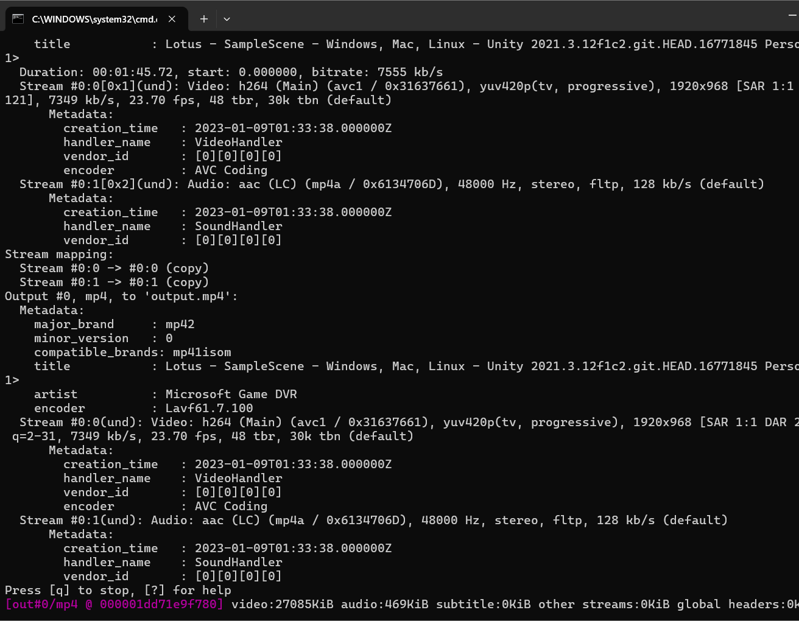

Nowadays, the form and content of web pages are very diverse, project files can be embedded within the text, images, video, links, code and other resources, images are generally png, jpg, webp and other formats, of which webp is very adaptable to the web page side, png can be a transparent channel, jpg is more general, video is usually mp4 format, there are other formats such as GIF, etc., and now the development of the web page usually use html, css, javascript are used for text frames, graphic styles and dynamic interactions respectively.
Version2.0 -- Ffmpeg
I use ffmpeg, a multi-media processing command-line tool library,
to compress the video/image and convert its format.I add ffmpeg in environment variables so that I can run ffmpeg directly in command line(cmd).
Image Optimization
-
Convert png to jpg
Add ffmpeg -i my/photo/direction converted/photo/direction, I drag the file in cmd to get the file path automatically
-
Compress-image
Add ffmpeg -i my/photo/direction -q:v 5 converted/photo/direction, -q:v 2 to -q:v 31, the number bigger, the quality lower.
-
Compress-image from 12.4MB to 223KB

Video Optimization
-
cut the video in 10s.
Add ffmpeg -i my/file/direction -ss 00:00:00: -to 00:00:10 -c copy my/cutted/file/direction
 -
compress-video
Add ffmpeg -i my/file/direction -b:v 1000k -c:a aac -b:a 128k my/compressed/file/direction
-
Compress video from 95.2MB,1:45Mins to 330KB,0:10Mins.
Version1.0 -- Online Tools
Image Optimization

Optimized image parameters:
- Image tool
- imageresizer
- Image size
- 1920px
- Image compression
- 28%
- File size
- 100kB
I used imageresizer converting the image from a 6.36MB JPG format to a 100KB WebP format. Image Resizer-The best online image resizer to resize your images at the highest quality. This cloud-hosted, highly scalable tool can resize your images within seconds! Simply upload your image and enter a target size. It's as easy as that! ImageResizer.com is browser-based (no software to install). It works on any platform (Windows, Linux, Mac). Your images are uploaded via a secure 256-bit encrypted SSL connection and deleted automatically within 6 hours. Since 2012 they 0 have resized millions of images for free! There is no software to install, registrations, or watermarks.
Video Optimization
Optimized video parameters:
- Video tool
- flexclip
- Video length
- 10 seconds
- Frame rate
- 24fps (frames per second)
- Video size
- 720p, HD
- video compression
- 10%
- File size
- 811KB
I used PR to cut out 10 seconds of a two-minute video, totalling 12MB, and then used the FlexClip website to compress the video online, totalling 811KB FlexClip-This video compression tool supports many formats such as, MP4, MOV, M4V and so on. Don't worry about privacy and security. They don't get access to your uploaded video files. It is completely free to use their compressed video. There will be no watermark on the compressed video as well. At the same time, Adobe's PR software as a professional video processing software is very good, he can complete a number of composite tasks such as editing, compression, etc., very suitable for professionals.
It is unethical to put creators' creations into the AI big model database regardless of their wishes, and AI-generated content that is indistinguishable from human-generated content or facts will result in a huge loss to human civilisation, I support badging human-generated content and letting the creators decide whether or not their own creations will be allowed to be assimilated by the AI.
I have specified the copyright in the footer, applied for the 'authored by human' badge from the Not By AI — Add the Badge to Your Human-Created Content website, and downloaded the ai.txt from Spawning's ai.txt Generator website, which selectively restricts the use of your site's content for commercial AI training.